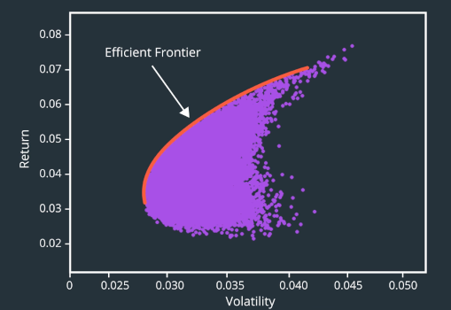

Portfolio
Table of Contents
1 Cumulative Returns
Two ways to calculate cumulative returns
1.1 Using Returns
returns = prices / prices.shift(1) - 1 returns = returns.fillna(0) # opntional cum_returns = (returns + 1).cumprod() cum_return = cum_returns.iloc[-1] - 1
1.2 Using Log Returns
import numpy as np log_returns = np.log(prices) - np.log(prices.shift(1)) log_returns = log_returns.fillna(0) # optional cum_log_returns = log_returns.cumsum() cum_return = np.exp(cum_log_returns.iloc[-1]) - 1
2 Relative Returns
- Fund Returns - Benchmark Returns
- For Active Fund: Active Returns
- For Passive Fund: Tracking Error
2.1 Tracking Error
Operationalize the tracking error.
import numpy as np excess_returns = portfolio_returns - benchmark_returns daily_tracking_errors = excess_returns.std(ddof=1) annualized_tracking_error = np.sqrt(252) * daily_tracking_errors
3 Absolute Returns
- Benchmark: Cash Interest Rate e.g. US Treasury, LIBOR
- Because the benchmark is relatively small, Hedge funds are evaluated by their performance alone.
4 Covariance Matrix
\[P=\begin{bmatrix} Cov(r_A, r_A) & Cov(r_A, r_B) \\ Cov(r_B, r_A) & Cov(r_B, r_B) \end{bmatrix}\]
covariance is: \[\begin{align*} Cov(r_A, r_B) &= E[(r_A-\bar{r_A})(r_B-\bar{r_B})] \\ & = \frac{1}{n-1}\sum_{i=1}^n(r_{Ai}-\bar{r_A})(r_{Bi}-\bar{r_B}) \\ & = \frac{1}{n-1}\sum_{i=1}^{n}r_{Ai}r_{Bi}\text{ (if }\bar{r_A}=\bar{r_B}=0\text{)} \\ & = \frac{1}{n-1}\boldsymbol{r}_A^T \boldsymbol{r}_B \end{align*}\]
\[\boldsymbol{r}^T\boldsymbol{r} = \begin{bmatrix} \cdots & \boldsymbol{r}_A & \cdots \\ \cdots & \boldsymbol{r}_B & \cdots \end{bmatrix}\begin{bmatrix} \vdots & \vdots \\ \boldsymbol{r}_A & \boldsymbol{r}_B \\ \vdots & \vdots\end{bmatrix} = \begin{bmatrix} \boldsymbol{r}_A^T \boldsymbol{r}_A & \boldsymbol{r}_A^T \boldsymbol{r}_B \\ \boldsymbol{r}_B^T \boldsymbol{r}_A & \boldsymbol{r}_B^T \boldsymbol{r}_B \\ \end{bmatrix} \]
So if each vector of observations in your data matrix has mean 0, the covariance matrix is: \[\frac{1}{n-1}\boldsymbol{r}_T\boldsymbol{r}\]
5 Sharpe Ratio
5.1 Efficient Frontier

- The portfolios on the efficient frontier are known as market portfolios.
5.2 Capital Market Line

- \(r_f=0.03\) \(\sigma_f\approx0\)
- Risk-free rate: normally refers to the rate of return on a three month treasury bill as the risk-free rate.

- Market Risk Premium
- The difference between the market return and the risk-free rate.
- Sharpe Ratio
- is just the slope of the line which is \(\frac{\bar{r}_M - r_f}{\sigma_M}\).
5.3 Portfolio Return \(\bar{r}_P\)

- Choose the \(\sigma_P\).
- Choose the weights on the risk-free asset and the market portfolio.
5.4 Sharpe Ratio
The Sharpe ratio is the ratio of reward to volatility. \[Sharpe=\frac{r_P-r_f}{\sigma_{excess\ return}}\]
Sharpe Ratio Over a Period of Time
Risk premium(excess return) \(D_t=r_{P, t} - r_{f, t}\) \[D_{avg}=\frac{\sum_{t-1}^T D_t}{T}\] \[\sigma_D=\sqrt{\frac{\sum_{t=1}^T (D_t-D_{avg})^2}{T-1}}\] \[Sharpe=\frac{D_{avg}}{\sigma_D}\]
Annualized Sharpe Ratio
\[Sharpe_{year}=\sqrt{252}Sharpe_{day}\]
6 Other Risk Measures
6.1 Semi-Deviation
Semi-deviation measure of risk is to measure downside risk specifically, rather than any kind of volatility. Semi-deviation is calculated in a similar way as standard deviation, except it only includes observations that are less than the mean. \[SemiDeviation=\sum_{t=1}^n(r_i-\mu)^2\times I_{r_i<\mu}\] Where \(I_{r_i<\mu}\) equals 1 when \(r_i<\mu\), and 0 otherwise.
6.2 VaR(Value-at-Risk)
VaR is defined as the maximum dollar amount expected to be lost over a given time horizon at a predefined confidence level.
For example, if the 95% one month VaR is $1 million
- there is 95% confidence that the portfolio will not lose more than $1 million next month.
- or there is a 5% chance of losing $1 million or more next month.
more on WikipediA

7 CAPM
The Capital Assets Pricing Model, pronounced “cap M”.
The CAPM is a model that describes the relationship between systematic risk and expected return for assets. The CAPM assumes that the excess return of a stock is determined by the market return and the stock’s relationship with the market’s movement.
For a stock, the return of stock \(i\) equals the return of the risk free asset plus \(\beta\) times the difference between the market return and the risk free return. \(\beta_i\) is the covariance of stock \(i\) and the market divided by the variance of the market.
\[r_i-r_f=\beta_i\times(r_m-r_f)\]
- \(r_i\): stock return
- \(r_f\): risk free rate
- \(r_m\): market return
- \(\beta_i=\frac{cov(r_i, r_m)}{\sigma_m^2}\): describes which direction and by how much a stock or portfolio moves relative to the market.
- When \(\beta_i\) is greater than 1, stock i moves up and down more than the market.
7.1 Compensation to Investors
- Time value of money: represented by the risk free return.
- Risk exposure to the market: \(\beta_i\times(r_m-r_f)\)
7.2 Security Market Line
The Security Market Line is the graphical representation of CAPM and it represents the relation between the risk and return of stocks. Note that the x-axis is \(\beta\).

7.3 Example
Given \(r_f=2%\), \(\beta_i=1.2\), \(r_m=10%\) \[r_i=r_f+\beta_i\times(r_m-r_f)=11.6%\]
8 Optimization
8.1 Basics
One Variable Function \(f(x)\)
- Finds the point \(x_0\) where \(f'(x)=0\)
- \(x_0\) is the local maximum if \(f''(x)<0\), or the local minimum if \(f''(x)>0\)
- inconclusive if \(f''(x)=0\)
Two Variable Function \(f(x, y)\)
Hessian matrix of second-order partial derivatives: \[H(x, y)= \begin{pmatrix} f_{xx}(x, y) & f_{xy}(x, y) \\ f_{yx}(x, y) & f_{yy}(x, y) \end{pmatrix}\]
Determinant of a matrix \[det\begin{pmatrix} a & b \\ c & d \end{pmatrix} = ad - bc\]
- if \(det(H)(a, b)>0\) and \(f_{xx}(a, b)>0\) then \((a, b)\) is a local minimum of f.
- if \(det(H)(a, b)>0\) and \(f_{xx}(a, b)<0\) then \((a, b)\) is a local maximum of f.
- if \(det(H)(a, b)<0\) then \((a, b)\) is a saddle point of f.
- if \(det(H)(a, b)=0\) then the second derivative test is inconclusive, and the point \((a, b)\) could be any of a minimum, maximum or saddle point.
8.2 Terminologies
- Domain
- all constraint functions are defined.
- Feasible Set
- The set of points that satisfy all the constraints.
- Unbounded
- An optimization problem where in the objective reaches positive/negative infinity for points in the feasible set.
8.3 Convex
An important type of optimization problems.
- The objective function and inequality constraints are convex.
- A convex function curves upward everywhere.
- Only has one minimum/maximum. i.e. local minimum is the globally optimal value.
Example: Minimum Portfolio Variance
- Objective Function \[\sigma_P^2=w_A^2\sigma_A^2 + w_B^2\sigma_B^2+2w_A w_B\sigma_A\sigma_B\rho_{r_A r_B}\]
- Constraints \[w_A+w_B=1\]
- Solving the Problem \[\frac{d(\sigma_P^2)}{dw_A}=0\] … \[w_A=\frac{\sigma_B^2-\sigma_A \sigma_B \rho_{r_A r_B}}{\sigma_A^2+\sigma_B^2-2\sigma_A\sigma_B\rho_{r_A r_B}}\]
8.4 cvxpy
- one variable with the size of one
import cvxpy as cvx import numpy as np x = cvx.Variable(1) objective = cvx.Minimize((x - 1)**2 + 1) constraints = [x <= 0] problem = cvx.Problem(objective, constraints) result = problem.solve() # Optimal value of x => x.value[0] # Optimal value of the objective => problem.value
8.5 Portfolio Optimization Problems
Common Constraints
- no short selling weights: \(0\le w_i \le 1\), \(\sum_{i=1}^n w_i\)
- sector limits: \(w_{tech1}+w_{tech2}+w_{tech3}\le M\); M=% of portfolio to invest in tech companies
- constraint on portfolio return: \(\boldsymbol{w}^T\boldsymbol{\mu}\ge r_{min}\); r_{min}=minimum acceptable portfolio return
Maximizing Portfolio Return
- objective: minimize \(f(w)=-\boldsymbol{w}^T\boldsymbol{\mu}\)
- constraint: \(\boldsymbol{w}^T\boldsymbol{P_x} \le p\); p=maximum permissible portfolio variance
Maximizing Portfolio Return And Minimizing Portfolio Variance
- objective: minimize \(f(w)=-\boldsymbol{w}^T\boldsymbol{\mu}+b \boldsymbol{w}^T\boldsymbol{P_x}\); b=tradeoff prarameter
Minimizing Distance to a Set of Target Weights
Tracking an Index
9 Summary
- Portfolio Expected Return
\[\mu_P=\sum_{i=1}^{N}w_i \mu_i=\boldsymbol{w^T\mu}\]
- Portfolio Variance
\[\sigma_P^2=\sum_{i=1}^N\sum_{j=1}^N w_i Cov(r_i, r_j)w_j=\boldsymbol{w^TPx}\]
- \(P_x\) is the covariance matrix.
- CAMP Portfolio Return \[r_P=\sum_{i=1}^n w_i(r_f+\beta_i(r_m-r_f))\]
- CAMP Portfolio Beta \[\beta_P=\sum_{i=1}^n w_i\beta_i\]